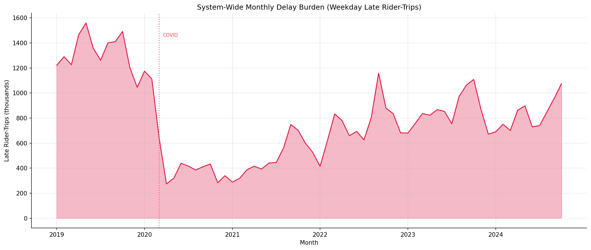
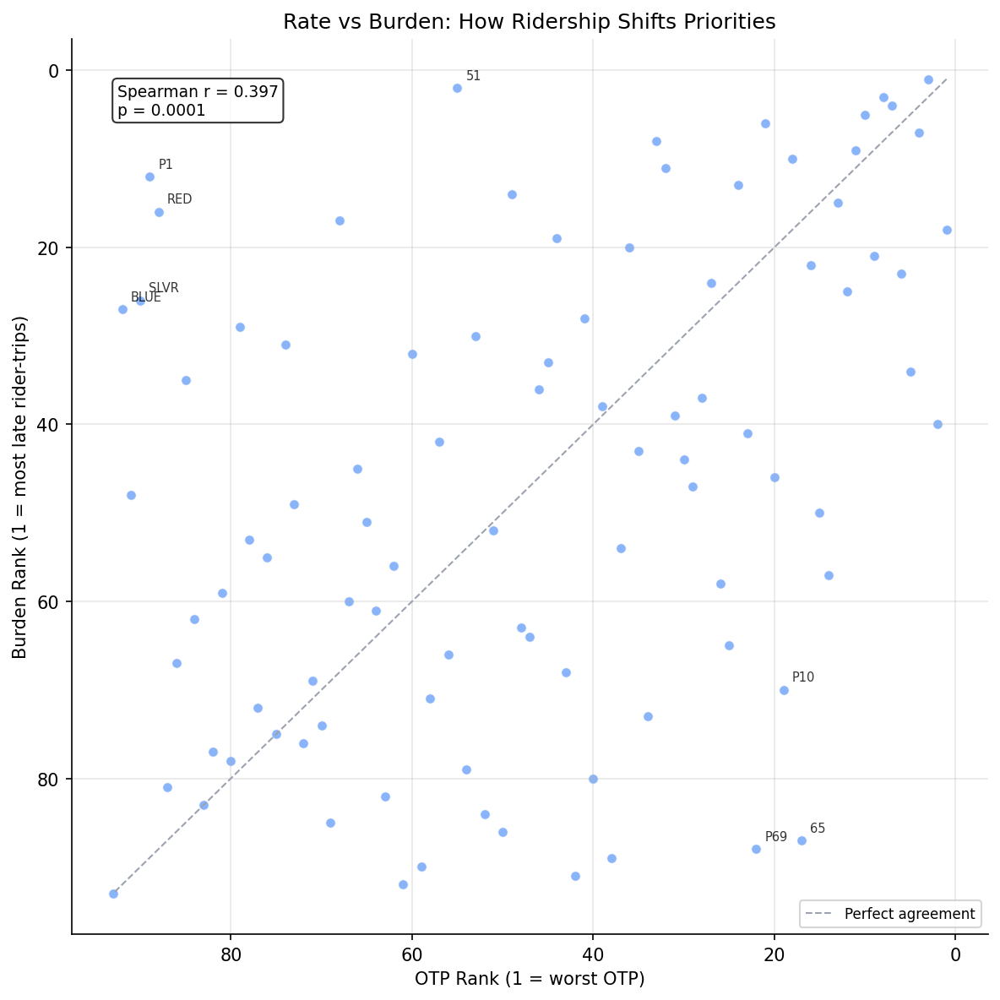
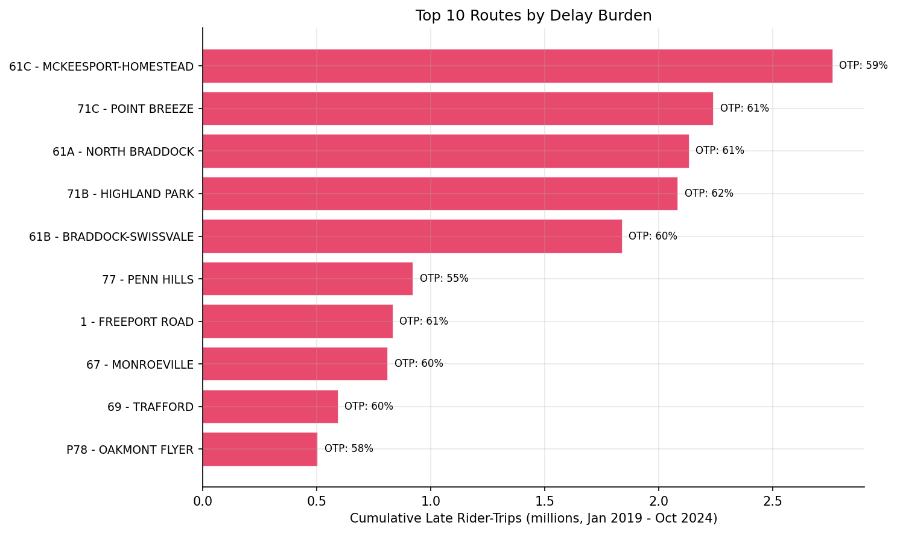

Analysis
22 - Passenger-Weighted Delay Burden
Ridership and External Factors
Data Provenance
flowchart LR 22_delay_burden["22 - Passenger-Weighted Delay Burden"] t_otp_monthly["otp_monthly"] --> 22_delay_burden 01_data_ingestion["Data Ingestion"] --> t_otp_monthly t_ridership_monthly["ridership_monthly"] --> 22_delay_burden 01_data_ingestion["Data Ingestion"] --> t_ridership_monthly t_routes["routes"] --> 22_delay_burden 01_data_ingestion["Data Ingestion"] --> t_routes d1_22_delay_burden["polars (lib)"] --> 22_delay_burden d2_22_delay_burden["scipy (lib)"] --> 22_delay_burden classDef page fill:#dbeafe,stroke:#1d4ed8,color:#1e3a8a,stroke-width:2px; classDef table fill:#ecfeff,stroke:#0e7490,color:#164e63; classDef dep fill:#fff7ed,stroke:#c2410c,color:#7c2d12,stroke-dasharray: 4 2; classDef file fill:#eef2ff,stroke:#6366f1,color:#3730a3; classDef api fill:#f0fdf4,stroke:#16a34a,color:#14532d; classDef pipeline fill:#f5f3ff,stroke:#7c3aed,color:#4c1d95; class 22_delay_burden page; class t_otp_monthly,t_ridership_monthly,t_routes table; class d1_22_delay_burden,d2_22_delay_burden dep; class 01_data_ingestion pipeline;
Findings
Findings: Passenger-Weighted Delay Burden
Summary
Over the Jan 2019 -- Oct 2024 overlap period, PRT accumulated 55.5 million late weekday rider-trips out of 179.2 million total (31% late rate). The top 10 routes by delay burden account for 26.6% of all late rider-trips, and ridership weighting substantially reshuffles which routes appear most problematic compared to a pure OTP ranking.
Key Numbers
- 55.5 million cumulative late weekday rider-trips (Jan 2019 -- Oct 2024)
- 179.2 million total weekday rider-trips; 31.0% system late rate
- Top 10 routes account for 26.6% of all late rider-trips
- Rank correlation between OTP rank and burden rank: Spearman r = 0.40 (p < 0.001) -- moderate, meaning ridership significantly reshuffles priorities
- 93 routes with paired OTP + ridership data
Top 10 Routes by Delay Burden
| Burden Rank | Route | OTP Rank | Avg OTP | Cumulative Late Rider-Trips |
|---|---|---|---|---|
| 1 | 61C - McKeesport-Homestead | 3 | 59.0% | 2,765,662 |
| 2 | 51 - Carrick | 55 | 68.6% | 2,360,226 |
| 3 | 71C - Point Breeze | 8 | 60.9% | 2,241,803 |
| 4 | 61A - North Braddock | 7 | 60.6% | 2,135,034 |
| 5 | 71B - Highland Park | 10 | 61.9% | 2,086,371 |
Route 51 (Carrick) is the standout example: it ranks only 55th by OTP (68.6%, near the system average) but 2nd by delay burden because it carries massive ridership. Conversely, Route 77 (Penn Hills) has the worst OTP (54.9%) but ranks only 18th by burden because fewer people ride it.
Observations
- Ridership dramatically reshuffles priorities. The Spearman rank correlation between OTP rank and burden rank is only 0.40 -- OTP rank alone is a poor proxy for human impact.
- The biggest upward shifts (more burden than OTP suggests) are high-ridership transit routes: P1 East Busway (+77 ranks), RED light rail (+72), BLUE light rail (+65). These routes have decent OTP (80%+) but carry so many riders that even their small late fractions generate substantial burden.
- The biggest downward shifts (less burden than OTP suggests) are low-ridership flyers: 65 Squirrel Hill (-70), P69 Trafford Flyer (-66), P13 Mount Royal Flyer (-51). These have poor OTP but few riders, so the total human impact is small.
- The delay burden trend shows a sharp drop during COVID (1.5M to 0.3M monthly late rider-trips), then a partial recovery to ~0.8-1.0M by 2024 -- still well below pre-COVID levels primarily because ridership hasn't recovered.
- Pre-COVID, the system averaged ~1.3M late rider-trips per month. Post-COVID (2023-2024), it averages ~0.8M -- a 40% reduction driven almost entirely by ridership collapse, not OTP improvement.
Discussion
This analysis reframes the OTP problem from "which routes are most unreliable" to "where does unreliability affect the most people." The two questions give different answers. A policy intervention on Route 51 (the #2 burden route) would affect more riders than fixing Route 77 (the #1 worst OTP route), even though 51's OTP is 14 pp better. Similarly, even small OTP improvements on high-ridership rail/busway routes would reduce more late rider-trips than large OTP improvements on low-ridership flyers.
The system's total delay burden has paradoxically decreased post-COVID -- not because service improved, but because fewer people are riding. If ridership recovers without OTP improvements, the burden will return to or exceed pre-COVID levels.
Caveats
- "Late rider-trips" is a derived metric:
avg_riders * day_count * (1 - OTP). It does not measure actual delay duration -- a trip that is 1 minute late counts the same as one that is 30 minutes late. - Ridership data is weekday only; weekend burden is not captured.
- OTP is a route-level monthly average; stop-level or trip-level variation is not reflected.
- The metric assumes all riders on a route experience the same OTP, which is an approximation -- riders at different stops on the same route may have different experiences.
Output
Monthly system and route-level late rider-trip totals over the analysis period.
routes ranked by total late rider-trips.

system-wide monthly late rider-trips.

scatter comparing OTP rank with delay burden rank.

bar chart of top 10 routes by late rider-trips.
Methods
Methods: Passenger-Weighted Delay Burden
Question
Which routes impose the largest total delay burden on riders, accounting for both OTP and ridership volume?
Approach
- Join monthly OTP with monthly weekday ridership by route and month.
- Compute monthly late rider-trips per route:
avg_riders * day_count * (1 - otp)where otp is on a 0--1 scale. - Rank routes by total and average monthly late rider-trips.
- Compute system-wide monthly late rider-trips and plot the trend over time.
- Identify the top 10 routes by cumulative late rider-trips -- these are where interventions would affect the most people.
- Compare the "worst by rate" (lowest OTP) with "worst by burden" (most late rider-trips) to show how ridership weighting shifts priorities.
Data
| Name | Description | Source |
|---|---|---|
otp_monthly |
route_id, month, otp | prt.db table |
ridership_monthly |
route_id, month, avg_riders, day_count; filtered to day_type='WEEKDAY' | prt.db table |
routes |
route_id, route_name | prt.db table |
Notes: Join on route_id and month; overlap period only (Jan 2019 -- Oct 2024).
Output
output/delay_burden_ranking.csv-- routes ranked by total late rider-tripsoutput/delay_burden_trend.png-- system-wide monthly late rider-tripsoutput/rate_vs_burden.png-- scatter comparing OTP rank with delay burden rankoutput/top10_burden.png-- bar chart of top 10 routes by late rider-trips
Sources
| Name | Type | Description |
|---|---|---|
| otp_monthly | table | Monthly OTP values by route. Produced by Data Ingestion. |
| ridership_monthly | table | Monthly ridership by route and day type. Produced by Data Ingestion. |
| routes | table | Route dimension table. Produced by Data Ingestion. |
| polars | dependency | Dataframe library used for fast tabular data transformations and aggregation. |
| scipy | dependency | Scientific computing library used for statistical tests and numerical routines. |